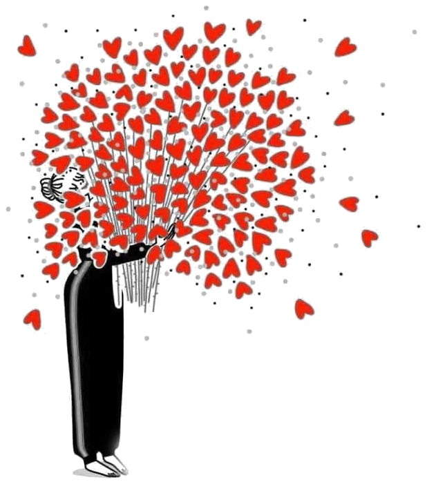
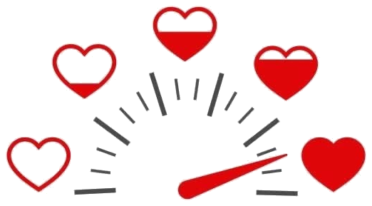

לפני שנלמד לאהוב אחד את השנייה נכון, צריך לדעת דבר אחד: מה בדיוק צריך לקרות כדי שאני, באמת, ארגיש אהוב.

כל מה שתמלאו נשמר אצלכם במכשיר. אף אחד אחר לא רואה את זה.
אפשר לאהוב מישהו מאוד, ולהשאיר אותו רעב. זה לא סתירה. זה מה שקורה כשאנחנו אוהבים בשפה שלנו, והוא צריך לשמוע אותה בשפה שלו.
גארי צ׳פמן כתב שכל אחד נכנס לקשר עם דלי אהבה שצריך להתמלא. הדלי הזה לא מתמלא מכל דבר. הוא מתמלא מדבר אחד מסוים, שונה אצל כל אחד מאיתנו.
זה שאנחנו אוהבים לא בהכרח אומר שהשני מרגיש אהוב.
ולכן התחנה הזאת לא מתחילה בשאלה מה לתת. היא מתחילה בשאלה מה חסר, ואצל מי, ומה בדיוק ממלא את זה.
לכל אחת מהן יש צורך שמתחתיה. זה הצורך שמחפש מענה, לא ההתנהגות עצמה.
לכולנו נעים לקבל את כל החמש. אבל אחת מהן היא לא נעימות. היא תנאי. בלעדיה לא נרגיש אהובים, גם אם נקבל את כל השאר בשפע.
חמש עשרה פעמים, שתי אפשרויות. שתיהן טובות. תבחרו את זו שהייתה עושה לכם יותר, לא את זו שנכון לבחור. אל תחשבו יותר מדי על כל אחת.
זו עדיין לא התשובה. זו התמונה שממנה נצא לשאלה האמיתית.
שאלון נותן לנו מספרים. אבל השפה העיקרית שלנו לא נמדדת במה שהכי כיף לקבל. היא נמדדת במה שכשהוא חסר, כלום אחר לא מפצה עליו.
אפשר לקבל ארבע מתוך חמש ועדיין להרגיש לא אהוב. זה בדיוק הסימן לכך שהחמישית היא העיקרית.
ולכן יש עוד שאלה אחת, והיא זו שמכריעה.
לא מה שהכי נעים. מה שאם ייעלם, שום דבר אחר לא יחזיר לך את התחושה שאוהבים אותך.
השאלון השווה בין השפות זו לזו, אבל הוא לא יודע כמה חזק הצורך עצמו. אפשר שכל החמש חשובות לך מאוד, ואפשר שאף אחת לא במיוחד. כאן זה נמדד בנפרד.
לא כמה אתם אוהבים. כמה אתם מרגישים אהובים, היום, בשבוע האחרון. תענו לפני שאתם מסתכלים מה השני סימן.

לא לתקן אחד את השני. לא להוכיח. רק מה שהתחדד לכם עכשיו, בזמן שמילאתם.